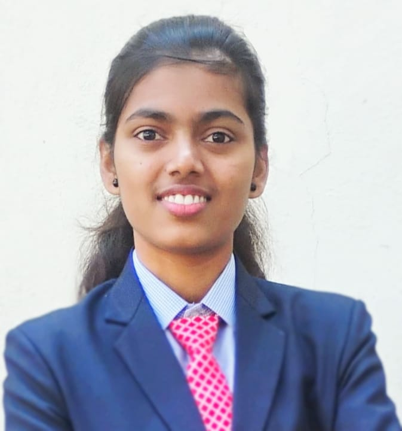

|

|
Prachi Patil
Linkedin
| prachipatil8145@gmail.com |
GitHub
| Kolhapur, Maharashtra
|
Summary
A proactive and detail-oriented Computer Science Engineering fresher
with hands-on project experience in software development and machine
learning. Eager to leverage programming skills in real-world
applications, and contribute to innovative solutions while continuously
expanding my technical knowledge
Education
- BTech in Computer Science and Engineering
-
Sharad Instistute of Technology College of Engineering Ichalkaranji
- CGPA:-7.99
- HSC
- D.R.Mane College Kagal
- Percentage:-84.17
- SSC
- New Highschool & Jr. College Bachani
- Percentage:-87.40
Skills
| HTML |
CSS |
Javascript |
C |
Java |
Projects
- An Integrated System For Document Management And Similarity Analysis
• This project automates document comparison using TF-IDF and cosine similarity to identify content
overlap efficiently. Designed for scalability and real-world use, it reduces manual effort and enhances
accuracy in document analysis.
- Research Paper Summarizer
• Built a system to summarize research papers efficiently.
- Interactive Voice Text Interpreter
• Developed a translation tool that supports converting text between languages (e.g., English to Spanish)